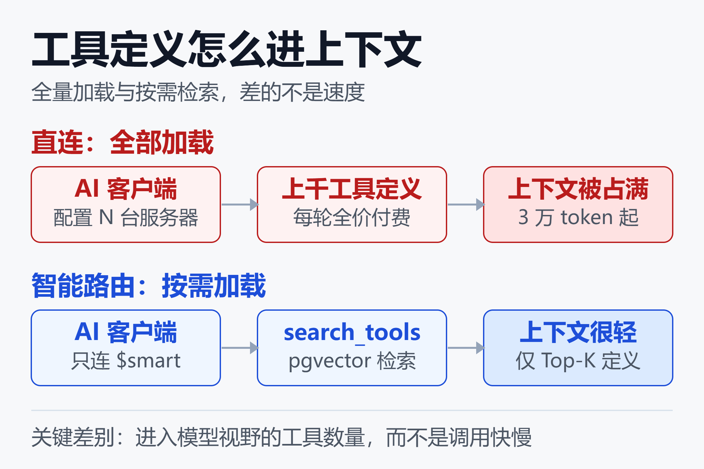
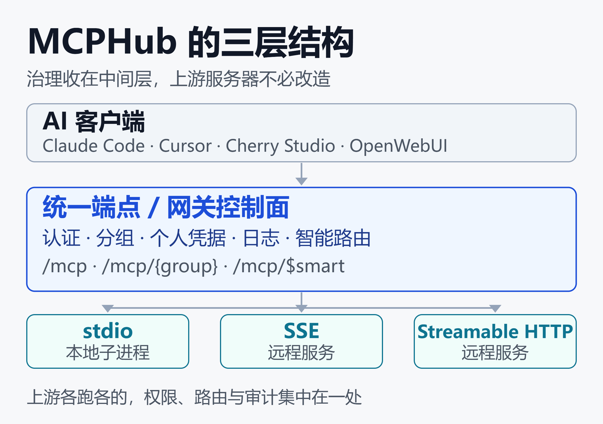

工具越多 Agent 越笨：MCPHub 用向量检索把上千工具挡在上下文外
序言：还没开始干活，3 万 token 已经没了
一组对比测试给出的数字相当刺眼：同一个 Agent 跑 10 轮对话，不接任何 MCP 服务器时每轮约 2,400 token；接上 3 个服务器后涨到 18,700；接上 5 个，单轮 31,200 token。
这些 token 不是用来思考的，而是用来塞工具定义的。每个工具的名称、描述、参数 schema 都算几百 token，在模型读到用户那句话之前就被写进系统提示，并且每一轮都要重新付一次钱。
更麻烦的是准确率。工具一多，名字相近、描述相近的工具会互相争抢注意力，模型开始选错工具、甚至把两个真实工具的名字拼成一个不存在的工具。有基准测试在 527 个工具、70 个服务器上跑过 12 个模型，结论是检索错误占了任务失败的近一半。
这不是模型不够聪明，而是工具目录没被管住。 2026 年的 MCP 网关赛道，本质上都在回答同一个问题：怎么只把当前需要的工具放进上下文。MCPHub 是其中一个把答案直接写进端点的项目。
一、工具膨胀：卡点不在模型，在工具目录
MCP 让接工具变得太容易了。mcpServers 里加一行，重启，Agent 就多一批能力。代价却不容易被看见，因为它体现在账单和准确率上，而不是报错里。
第一层代价是上下文占用。单个 GitHub MCP 就带 90 多个工具，一次 tools/list 拉回来的定义可达数万 token。工具定义属于系统提示，享受不到针对用户消息的压缩手段，每轮按全价结算。
第二层代价是选择退化。当可用工具从十几个涨到几百个，选工具就从「读一遍清单」变成了「检索问题」。相近语义的工具越多，模型越容易在中间位置丢失注意力，工具选择准确率的下滑往往早于上下文被撑满。
MCP 官方在 2026-07-28 版客户端最佳实践里，已经把这件事写成了规范建议：主机应改用渐进式发现，平时只暴露一个轻量的 search_tools 元工具，命中后才把完整定义加载进上下文。文档给出的切换阈值是工具定义占上下文的 1%~5%。
搜索策略也给了四条路：关键字匹配、基于嵌入的向量检索、子智能体代选、以及混合式。官方文档特别指出，基于嵌入的方案更擅长处理同义词和语义匹配。
换句话说，网关不再只是转发请求的管道，而是决定哪些工具定义能进入模型视野的关卡。这一层做得好，省的是 token，救的是准确率。
二、MCPHub 是什么：从「Hub」改名成「控制面」
一句话：MCPHub 是一个开源、可自托管的 MCP 网关与控制平面，在 AI 客户端和一堆 MCP 服务器之间立起统一的控制点。
先看基本盘，数据截至 2026 年 11 月 13 日：
| 指标 | 数值 |
|---|---|
| Star | 2,681 |
| Fork | 369 |
| 最新版本 | v1.2.3 |
| 发布时间 | 2026-11-11 |
| 仓库创建 | 2025-03-31 |
| npm 月下载 | 9,144 次 |
| 协议 | Apache-2.0 |
值得留意的是定位换过一次。早期描述是「统一管理、动态编排多个 MCP server/API 到不同端点」，现在官方措辞改成「自托管 MCP 网关与控制面，用于连接、控制和运行 MCP 服务器」。
从「编排」到「控制」，对应的是功能重心的迁移：分组可见性、按用户凭据、密钥作用域、审计日志，这些治理能力逐渐盖过了单纯的聚合。项目 topics 里同时挂着 mcp-gateway、mcp-router、mcp-hub，也算这条演进的痕迹。
上手成本很低，一条命令就能起服务：
docker run -p 3000:3000 \
-v ./data:/app/data \
samanhappy/mcphub
打开 http://localhost:3000 用 admin 登录。首次启动若没设 ADMIN_PASSWORD，随机密码会打印在容器日志里。配置沿用大家熟悉的 mcp_settings.json：
{
"mcpServers": {
"time": {
"command": "npx",
"args": ["-y", "time-mcp"]
}
}
}
真正的关键是客户端只需要记一个地址族：
http://localhost:3000/mcp
http://localhost:3000/mcp/{group}
http://localhost:3000/mcp/{server}
http://localhost:3000/mcp/$smart
http://localhost:3000/mcp/$smart/{group}
分别是全部服务器、某个分组、某一台服务器、智能路由、分组内的智能路由。$smart 就是这篇文章标题里那个「挡住上千工具」的开关。
三、智能路由：把上千工具挡在上下文外
$smart 不是简单的负载均衡，而是把官方规范里的渐进式发现做成了可直接连接的端点。官方称它为 Smart Routing，底层是向量语义检索。
按官方文档，流程分四步：
- 工具索引：服务器启动时发现所有工具，抽取名称、描述、参数等元数据，转成向量嵌入，存入带 pgvector 的 PostgreSQL。
- 语义检索：用户查询同样被转成向量，用余弦相似度找匹配工具，按相关性打分排序。
- 智能过滤：动态阈值挡掉不相关结果，同时叠加上下文感知、工具可用性和用户权限过滤。
- 工具执行：命中的工具可直接调用，带参数校验、错误处理、统一响应格式和调用日志。
启用它不是零成本。除了 MCPHub 本体，还需要 PostgreSQL + pgvector 存向量、一个 OpenAI 兼容的嵌入服务，以及对应的环境变量。这意味着从「一条 Docker 命令」升级成「一套 compose」。
分组范围检索是更实用的设计。把开发、预发布、生产拆成不同 group，/mcp/$smart/production 就只在生产组里找工具，既缩小检索空间，也天然隔离了环境权限。
还有一个细节能看出工程成熟度：pinnedTools。$smart 端点默认只列元工具，高频工具每次都要先走一次 search_tools；把常用工具钉在分组配置里，端点会直接带上它们的完整定义，省掉这一跳。

图里对比了两条路径：直连时所有服务器的完整工具定义一次性塞进上下文，而智能路由只暴露搜索元工具，命中后才加载少量完整定义。核心差别不是响应速度，而是进入模型视野的工具数量。
需要说清口径：官方尚未公布 MCPHub 智能路由在同基准上的 token 节省比例，暂无同基准对比。行业里流传的「语义检索省 60%~85%」「定义开销降 80% 以上」来自 ToolHive、RAG-MCP 与厂商网关的方案，属于机制层面的判断，具体差距需要在自己的数据上验证。
另外，语义检索本身也有新失败模式：意图模糊时可能挑错服务器。社区实践给出的建议是保留分组端点作为确定性兜底，别把关键链路全押在 $smart 上。
四、省 token 之外，它真正卖的是治理
如果只为省 token，一个 search_tools 中间层就够了。MCPHub 更完整的价值在于把「一堆裸 MCP」变成「可运营的服务」。
连接与路由层：同时支持 stdio、SSE、Streamable HTTP 三种传输；服务器别名、分组、可见性控制；配置热插拔，加减服务器不用停机。对个人开发者，最直接的变化是从「每台机器、每个客户端各配一遍」变成「一条 URL」。
访问与凭据层：内置 OAuth 2.0 服务端与客户端双模式、Bearer Key、按服务器或分组的可见性。个人凭据功能允许一个共享服务器绑定每位用户自己的密钥，加密存储并隔离 stdio 运行时；v1.2.3 又补上了个人 API Key 只能访问指定分组的限制。GitHub / Google 社交登录走 Better Auth，但需要开启数据库模式。
运维层：工具调用日志、请求状态与延迟、健康检查、Web 控制台、大文本工具结果压缩、MCP Apps 透明代理。生产路径提供 PostgreSQL 配置存储与多副本部署，后者明确要求会话亲和与重连边界。

这张图把结构拆成三层：AI 客户端只面对统一端点，中间的网关控制面承担认证、分组、凭据与日志，底层才是各自运行的 MCP 服务器。所有治理动作集中在中间层，上游服务器不必逐个改造。
技术栈是 Node.js 22 + Express + TypeScript（ESM），前端 React + Vite + Tailwind；本地账号用 JWT + bcrypt，OAuth 服务端基于 @node-oauth/oauth2-server。存储默认是一个 mcp_settings.json 文件，生产可切 PostgreSQL + TypeORM。
部署形态也给得比较全：两个 Docker 镜像变体，latest 含 Node、Python/uv、Git 与构建工具，latest-full 再加 Rust 工具链、Docker Engine 和 Playwright 浏览器；支持 DISABLE_WEB=true 的无界面模式；官网还提供 RepoCloud、Railway 一键部署。
商业侧目前很克制：自托管版 Apache 2.0、全功能免费、无遥测、不限服务器与用户数；付费部分是维护者直接提供的 Production Support，按项目议价，覆盖架构评审、OIDC、凭据管理、审计加固、Kubernetes 与高可用准备。
五、8 个开源网关里，它站在哪一层
MCP 网关不是一个同质赛道。按「要解决什么」分三层，选型会清楚很多：
| 层次 | 干什么 | 代表 |
|---|---|---|
| 传输桥接 | 协议转换 | mcp-proxy、mcpo |
| 聚合 | 多server并一端点 | MCPHub、MetaMCP |
| 治理 | 认证策略与隔离 | ToolHive、ContextForge |
MCPHub 大致落在「聚合 + 轻治理」，比纯桥接重，比企业级治理轻。2026 年的开源网关横评里，同赛道的 Star 量级是这样的：
| 项目 | 侧重 | Star |
|---|---|---|
| agentgateway | LLM/MCP/A2A | 6k |
| ContextForge | 联邦注册 | 4.8k |
| MCPHub | 网关控制面 | 2.6k |
| ToolHive | 容器隔离 | 2.3k |
| Docker MCP | 桌面体验 | 1.6k |
横评给 MCPHub 打勾的项包括：单一端点、客户端认证、按工具访问控制、内置 server market 与官方 MCP Registry、OpenAPI 导入、免费版功能齐全。
短板同样明确：stdio 服务器是作为网关主机的子进程直接拉起的，没有容器沙箱，也没有内置 guardrails。而 ToolHive、Docker MCP Gateway 的核心卖点恰恰是「每台服务器一个隔离容器 + 网络限制」。
所以分野不是谁功能多，而是信任边界画在哪里。要的是统一入口、统一密钥、统一日志，MCPHub 的轻量是优势；要的是「上游服务器不可信、必须关进盒子」，就得往容器化方案走。也有团队把两者叠起来：ToolHive 负责跑和隔离，MCPHub 负责路由与暴露。
六、代价：8 个 CVE 同日公开，百台规模尚未验证
这部分决定它能不能上生产，比功能清单更值得读。
第一是安全记录。 2026-08-31，GitHub 的 CNA 一次性公开了 8 个针对 MCPHub 的 CVE，且全部是先修后披露：
| 编号 | 问题 | 修复版 |
|---|---|---|
| 79748 | 非管理员RCE | 0.12.15 |
| 79744 | 全局配置越权 | 1.0.29 |
| 79750 | 跨租户调用 | 1.0.30 |
| 79746 | 密钥越组 | 1.0.31 |
| 79745 | 提示词篡改 | 1.0.32 |
| 79747 | 服务端SSRF | 1.0.32 |
| 79749 | IPv6绕过 | 1.0.32 |
最重的是 CVE-2026-79748，CVSS 9.9：v0.12.15 之前，任何已登录的非管理员都能通过注册接口提交 stdio 服务器配置，command 与 args 不做校验，网关会直接把它当进程拉起。官方 Docker 镜像常以 root 运行，等于把主机交出去。修复早在 2026-05-02 就发了，CVE 记录晚了近四个月。
9 月又追加了 CVE-2026-90474：v1.0.32 之前内置 OAuth 2.0 服务端默认不强制客户端认证、PKCE 也是可选，截获授权码即可换取令牌接管账号，由 PayPal 安全团队报告，修复方式是强制 client auth 与 S256-only PKCE。
此后公告并未停止：日志路由无鉴权、活动日志 IDOR、上游 OAuth state 绕过、MCPB 可执行文件覆盖导致存储型 RCE、DNS rebinding 绕过 SSRF 防护、以及非管理员借 passthroughHeaders 窃取管理员凭据（修于 v1.1.8）。累计安全公告约 18~21 条，其中还有若干 critical 未分配 CVE 编号。
第三方代码审计给的结论很直接：管理员权限约等于命令执行；服务默认监听所有网卡；三个月内有 15 个 fix(security) 提交；仓库没有 security policy 文件；个人凭据用 AES-256-GCM 加密，但服务端 API key 在配置文件里是明文。
第二是规模化。 issue #1154 是一份生产运营报告：约 100 个服务器、其中 95 个 stdio、工具总数上千。冷缓存重启时 99 台里有 74 台在 300 秒内没连上，约 80% 的集群不可用。
根因有三条：启动时对所有服务器并发连接且无上限；工具列表只存在于内存、不持久化，重启必须逐台重连才能声明能力；容器 writable layer 里的 npm/uv 包缓存随重建丢失，导致每次都要重装约 95 个包。把 /root/.npm 与 /root/.cache/uv 挂成卷后，超时基本消失。
维护者已合并 STARTUP_CONNECT_CONCURRENCY 限流与 Docker 缓存文档，持久化工具缓存仍在设计阶段。项目侧的回复也写得很坦白：尚未在这一规模完成验证，issue 保持开放等待反馈。
第三是项目结构风险。 仓库属于个人账号而非组织，近期提交高度集中在单一贡献者；健康类评估给出 vitality 99、security 56 的分化评分；仓库没有 CONTRIBUTING、行为准则或 issue / PR 模板。迭代极快（近 90 天约 30 个 release），但快本身也意味着升级频繁。
七、上生产前的检查清单
结合官方文档、公告和社区实践，下面这些动作值得在部署前逐条过一遍。它们不解决架构问题，但能挡掉绝大多数已知事故：
- 只监听内网：把服务绑到
127.0.0.1或放在 VPN 后，别把控制台端口直接暴露公网。 - 自己设密钥：显式设置
ADMIN_PASSWORD与JWT_SECRET，不要依赖日志里的随机密码；生产环境绝不设NODE_ENV=development。 - 保持认证开启：MCP 端点默认要求 Bearer 认证，关闭仅适用于完全可信环境；「免登录」只影响仪表盘，不影响端点。
- 及时升级并锁版本：安全修复密集，跟随 release；上游 MCP 服务器别用
@latest，固定版本可防供应链漂移。 - 挂全数据卷：除
./data外，规模化场景再挂/root/.npm与/root/.cache/uv，避免重启变重装。 - 备份加密密钥：数据库模式需要持久化的
MCPHUB_CREDENTIAL_ENCRYPTION_KEY，只备份数据库而丢密钥，加密凭据无法恢复。 - 给
$smart留兜底：保留分组端点，语义路由挑错时能立刻切回确定性路径；高频工具用pinnedTools钉住。 - 先小后大：先用 2~3 台稳定服务器跑通端点、权限与客户端，再逐步加量，别一上来写满二十台。
一个最小的安全启动示例：
docker run -p 127.0.0.1:3000:3000 \
-e ADMIN_PASSWORD=your-password \
-e JWT_SECRET=your-secret \
-v ./data:/app/data \
samanhappy/mcphub
单服务器场景其实不必上网关：多一层转发、多一套要维护的认证与数据库，收益抵不过成本。这条判断同样适用于 $smart——工具只有十几个时，全量加载本来就没什么开销。
八、谁适合，谁该绕开
从机制上看，适合的是同时管理多台 MCP 服务器、且需要在多个客户端之间复用同一套能力的团队：一个端点、一处密钥、一份日志，分组做权限边界，智能路由压住工具目录。中文文档、国内代码托管镜像和交流群，对国内团队是额外便利。
该绕开的是三类情况：只跑一两台服务器，网关纯属负担；上游服务器本身不可信、必须容器级沙箱，那应该看 ToolHive 或 Docker MCP Gateway；以及需要大规模高可用、但无法接受「百台规模尚未验证」这一现状的关键链路。
还有一类容易被忽略：智能路由需要 PostgreSQL、pgvector 和嵌入服务。如果团队没有维护向量库和 embedding 调用预算的意愿，MCPHub 最有辨识度的能力就发挥不出来，此时它就退化成一个好用的聚合网关。
以上属于从功能组合出发的机制判断，不是跑分结论。工具选型最可靠的方式，仍是拿自己的工具目录和真实请求测一遍：记录每轮工具定义 token、工具选择准确率、重启恢复时间，再决定要不要把网关放进链路。
小结
工具膨胀是 2026 年 Agent 工程里最容易被低估的成本。它不报错、不崩溃，只是让每一轮对话都更贵、每一次工具选择都更不稳。MCP 官方已经把渐进式发现写进客户端最佳实践，网关因此从「转发层」变成了「上下文关卡」。
MCPHub 给出的答案相当具体：一条 Docker 命令收拢所有服务器，五个端点覆盖从全量到分组再到语义检索，$smart 用 pgvector 只把相关工具送进模型视野；外面再包一层认证、个人凭据、日志与数据库模式。2,681 Star、v1.2.3、约两天一个版本，项目仍在高速前进。
但它的另一面同样具体：同批公开的 8 个 CVE、一条 CVSS 9.9 的 RCE、持续到 10 月的安全公告、以及百台规模下那次 80% 不可用的重启。控制面把权限收拢到一处，也就把风险集中到了一处。
省 token 是买点，治理是价值，可信度才是门槛。这三层顺序，别倒过来。
免责声明
本文基于公开仓库、官方文档、安全公告、第三方审计与行业横评撰写，数据已尽量标注时点，产品版本与安全状态可能随发布变化，请以官方仓库和安全公告为准。
文中引用部分数字来自第三方基准与媒体整理，不同来源口径不一致时以官方接口数据为准；关于选型、部署与适用场景的内容属于技术分析，需在自己的环境验证，不构成采购、安全合规或投资建议。
参考来源
- GitHub —— samanhappy/mcphub 官方仓库
- MCPHub —— 官网
- MCPHub —— 定价与生产支持说明
- MCPHub 文档 —— 智能路由 Smart Routing
- MCPHub 文档 —— 中文快速开始指南
- MCPHub 文档 —— Quick Start
- GitHub Releases —— MCPHub v1.2.3 发布说明
- GitHub Issues —— 约 100 个 stdio 服务器的重启规模化报告 #1154
- npm —— @samanhappy/mcphub 包页面
- MCP 中文文档 —— 客户端最佳实践（2026-07-28 版）
- Stride Techworks —— Your agent has 90 tools. That's the bug
- Clawdbytes —— MCP 的隐藏 token 税
- CVE Record —— CVE-2026-90474 MCPHub OAuth 认证绕过
- GitHub Security Advisory —— GHSA-3m7m-37xf-xp9x
- VulnCheck —— MCPHub 1.0.32 前 OAuth 2.0 认证绕过
- MCP News —— 八个 CVE 同批公开与修复时间线
- Severity Daily —— 八个 MCPHub CVE 的修复版本对照
- Greenlit Books —— MCPHub 作为网关的安全性审计
- Geekflare —— 2026 年最佳开源 MCP 网关横评
- AgentIndex —— MCP 网关与代理分层对比
- AgentIndex —— MCPHub 项目维护状态与权衡
- inspect.software —— samanhappy/mcphub 健康指数
- Hysenlabs —— MCPHub 配置与认证开关分析
- AllMCPs —— MCPHub 能力与限制整理
相关阅读
- MCP 与 A2A 协议深度解析：AI Agent 通信标准的分工与博弈
- LiteLLM 深度调研：用一个开源网关统一 100+ 大模型的完整实战指南
- Agent 治理的隐性成本：可观测性为什么越早做越便宜
- Langfuse 实战：给 LLM Agent 装上可观测性
- Vibe Coding 的隐藏代价与安全风险
- 企业 AI Agent 部署实战：从 0 到规模化落地
推荐搭配装备
善其事，利其器。以下硬件能最大化你的AI体验👇
🔗 通过以上链接购买可支持本站持续运营 🙏